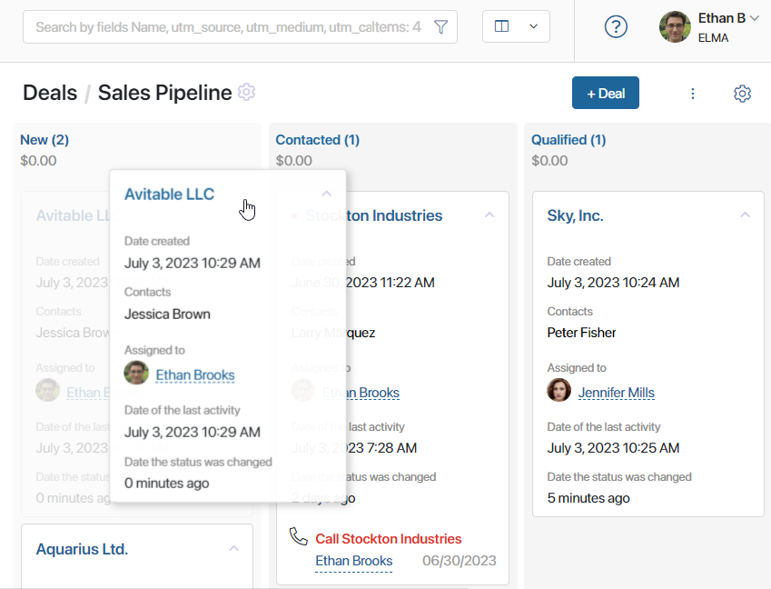
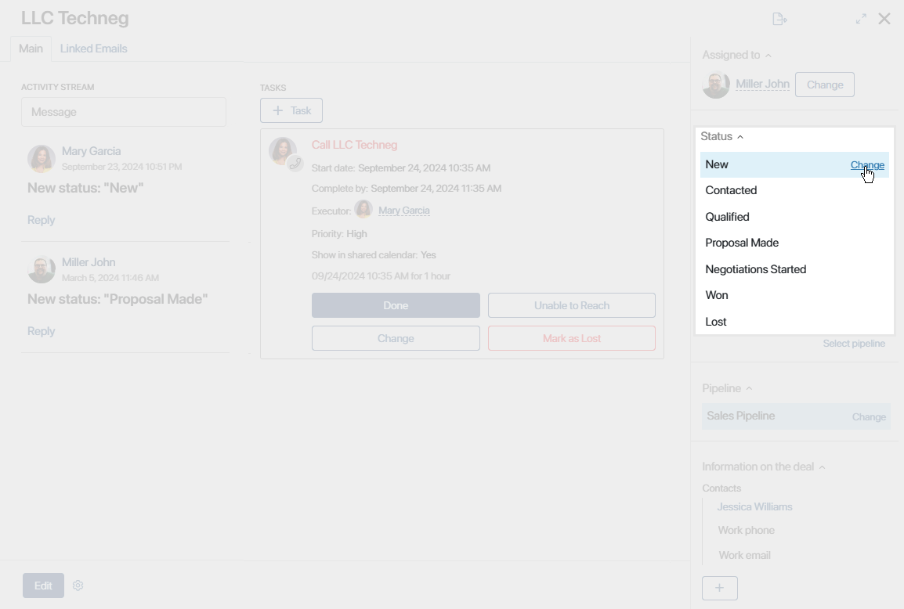
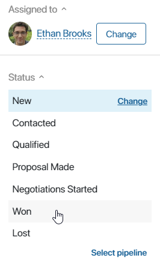
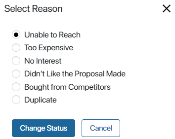
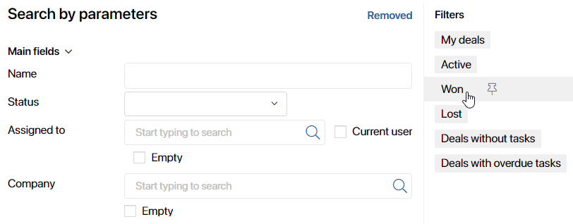
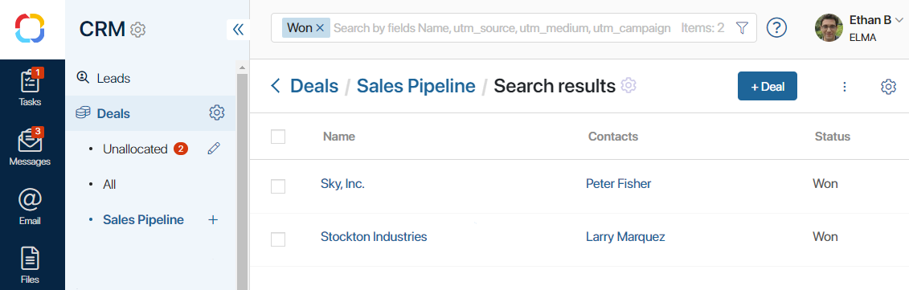

When the status of a deal changes, the deal progresses from one stage of the pipeline to another. Statuses can be changed manually or automatically within a business process, depending on the pipeline’s settings set by the system administrator.
The dates when a deal’s status changes are recorded. On the deal’s page and the Kanban board, you can see when each item was assigned the current status.
The system administrator can also configure the visibility of statuses on the Kanban board. On the funnel page, you will only see those statuses to which you have been granted access.
Change the status manually
If manual status change is selected in the pipeline’s settings, a user can change a deal’s status in two ways:
- On the pipeline’s page, drag the deal from one stage to another.

- Open a deal’s page. In the sidebar, click Change. Select the new status in the drop-down list. The deal will move to the corresponding stage of the pipeline.

Automatic status change
If automatic status change within a business process is selected in a pipeline’s settings, the deal will automatically go from one stage to another as users complete tasks assigned to them within the process.
Close a deal
A deal is considered closed once it reaches a final status. There are two default final statuses: Won and Lost. The administrator can change them in the pipeline’s settings if necessary.
To change its status to one of the final ones.

If the deal was lost, specify the reason the customer decided not to buy your product. The list of these reasons can be edited by the administrator in the pipeline settings.

CRM tasks associated with the deal will be closed automatically when it’s marked as lost.
View closed deals
By default, closed deals are hidden from the pipeline. If you need to view a closed deal, go to the pipeline that it used to belong to. In the search bar, click the icon. On the right of the search window, select one of the per-configured filters: Won or Lost.

All the deals with the selected status will be displayed on the page. You can combine different filters for more precise search. Learn more about that in Search and filters.

Moreover, the administrator can change the pipeline’s settings so that deals in final statuses are always shown on the pipeline page.
How to continue working with a closed a deal
By default, the status of a closed deal cannot be changed. However, if you need to reopen it, you can do it using the Change Status button. It can be added to the deal page by the administrator. Read more about adding and setting up buttons in Manage buttons on app item pages.